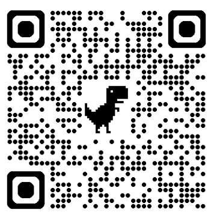
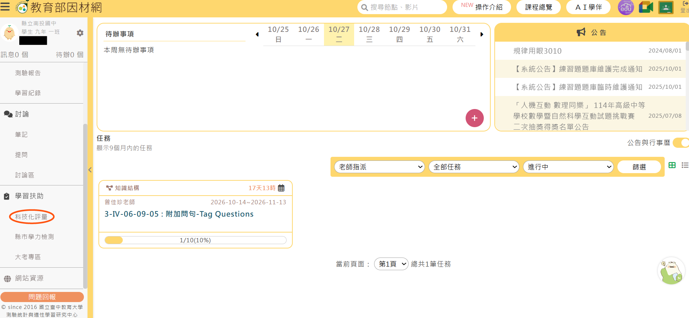
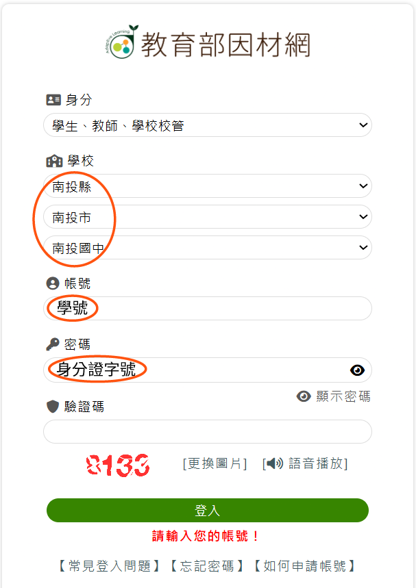
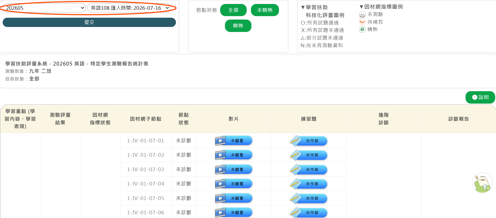
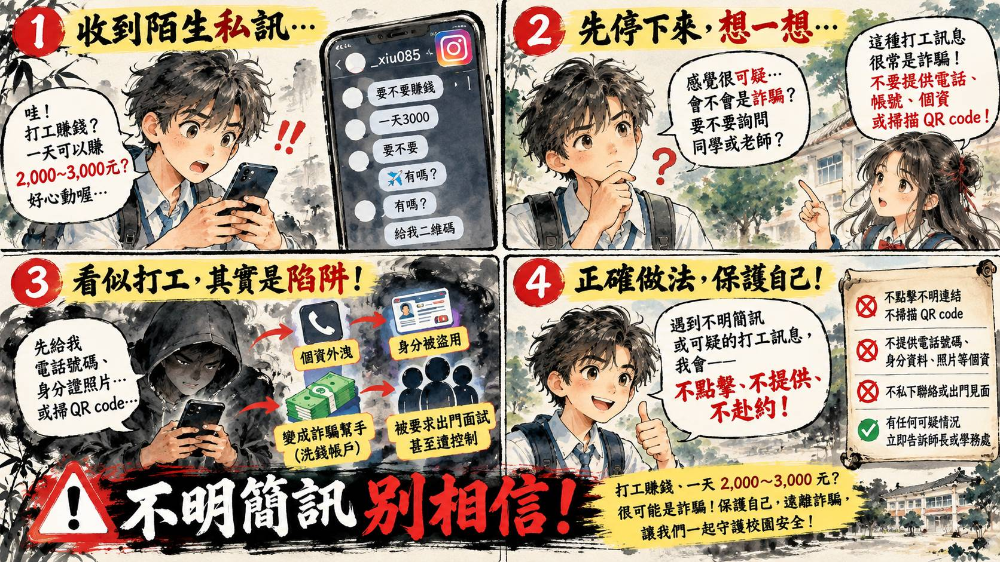

找不到符合搜尋條件的內容
請嘗試其他關鍵字，或點擊上方「清除搜尋」
會議文件與處室原檔下載專區
提供 Word (.docx) 檔直接下載南投國中115學年度11月份導師會報(總).docx
整合版正式會報手冊（45 KB）
完整整合教務處（6大業務）、學務處（6大組別）、總務處、輔導室與家長會報告及14位委員名冊之標準格式大會總手冊。
學務處二次導師會報報告事項.docx
學務處原始提報檔（41 KB）
包含會議基本程序日程、訓育組、生教組（監視器與自省書規定）、體育組（全縣運）、衛生組、健康中心（11/12體檢）及午餐秘書提報事項。
南投國中115學年度11月份導師會報(總)_原檔備份.docx
總務處與家長會原檔備份（28 KB）
彙整前之原始備份存檔，包含總務處各項校舍修繕工程進度、11/4施工公告、節電配合事項及家長會長會務報告與家長委員名冊表。
115-11月份導報(教).docx
教務處原始提報檔（1.2 MB）
包含教務處主任宣導、教學組、課發組（內建教育部因材網操作高清圖）、註冊組（9項學籍考務）、設備組及資訊組業務報告原檔。
會議程序與資訊
開會資訊會議基本資料
會議議程規劃
一、主席報告
學務處主持致詞與說明會務方向
二、各處室報告
1. 教務處
2. 學務處
3. 總務處
4. 輔導室 / 家長會
三、導師時間
各年級導師意見交流、班級經營問題反應與提案討論
四、校長致詞
校務發展方向裁示、重點工作勉勵與回應

南投國中 115-11 導師會報電子手冊 行動 QR Code
歡迎全校導師與行政同仁使用手機或平板相機直接掃描上方 QR Code，即可在個人行動載具上隨時同步開啟本會報手冊、即時搜尋各處室重點與下載 Word 原檔。
💡 系統通行密碼：049 ｜ 網址：https://yaoshuchin.github.io/1151102-ntjh-tutor-meeting/
教務處 業務報告
共 6 大業務類別重要工作規範與行事
-
寒假輔導課與期末日程： 寒假輔導訂於 116年1/21(四) – 1/27(三)。1/18、1/19為第三次定期評量，1/20(三)為休業式。
-
學習扶助成長測驗： 預計12月進行，請導師能進入科技化評量網站了解學生狀況，並督促學生進入【因材網】自主學習。
-
教學正常化督導： 請各位老師全力協助落實：不公開公告成績單、早自習時間不做評量考試。
-
公開授課： 每位教師每學年至少皆需辦理公開授課一次。
-
專科教室線上登記： 如有借用需求，請至校網 ➔ 教師專區 ➔ 專科教室線上登記借用。
課務與評量通知
-
調、代課與公假申報流程：
煩請各位老師，調、代課務必提前至教學組填寫表單以利排代課進行。若同仁請公假需排代課，也請務必提早知會教學組（教學組系統無法自動獲知請假資料）。
-
第二次定期評量：
訂於 12/2(三) – 12/4(四) 進行第二次定期評量，麻煩導師多督促學生勤加複習，爭取佳績。
-
國語文校內賽延期：
因颱風及二、三年級畢旅與隔宿露營活動影響，校內國語文競賽順延至 11/6(五) 舉辦，請各位導師留意時間更動。
科技化評量成長測驗與因材網自主學習
成長測驗實施方式：預計在第二次段考後實施，將分年級、分科別於早自習時間拉學生出來進行測驗。測驗範圍為上一學年度的國、英、數課程，測驗對象為 115年6月篩選測驗未合格之個案學生。
重要提醒：本校個案學生人數佔總學生數三分之二，請導師及任課教師鼓勵學生善用平板或電腦登入因材網，觀看未通過課程影片並演練題目以提升基本學力。
學生登入因材網 4 大步驟指引（點擊圖片可放大預覽）
搜尋「教育部因材網」➔ 點選右上角「一般帳號登入」

選南投縣、南投市、南投國中，帳號(學號)、密碼(身分證)

登入後點選左下方選單中的「科技化評量」專區

選取「202605」、數學/英語/國語文108展開補救
註：教師登入因材網請選擇「教育雲端帳號」登入。
學籍、讀卡、升學與輔導相關提醒（共9點）
三年級在校拍攝圓滿完成。班上若有已繳費尚未拍攝的同學，請通知儘速至國際照相館補拍（需著制服），並將電子檔交至註冊組。老師若尚未拍攝請於 12月底前 至國際照相館拍攝完成。
全校尚有 10位學生 尚未完成註冊（1年級2位、2年級4位、3年級4位，10/27查台銀）。請導師了解家庭經濟情況，必要時可向學務處申請仁愛基金補助。
監考老師務必確實清點答案卡張數。請導師提醒學生座號劃卡包含十位數與個位數（例：5號需劃05）。段考當天班長請至註冊組登記缺考。讀卡老師請務必勾選「缺考」再讀卡。第二次段考為 12/2(三)、12/3(四)。
模擬考題本與卡片為學生自費購買，教務處無備用本。請國三導師與監考老師務必將缺考學生的題本卡留在班級保管。三年級第2次複習考(1-4冊)預定於 12/23(三)-12/24(四) 辦理。
近期開始國三會考及免試入學資料校核，請督促學生儘速銷過。特別提醒：八大領域中有五大領域不及格者，將無法領取畢業證書（僅發修業證明書），請導師多加輔導關心。
轉入生依縣府統一編班程式進行跑班分配（依班級人數含特殊生抵減，同人數由亂數決定），故若班級人數較少，可能連續獲派 2 位以上轉入生。
寒假輔導課時間：116年1/21(四) – 1/27(三) 08:00-11:50（每日4節課半天，07:50到校），共計 5 天。預計於 11月中旬 發放意願調查單。
• 會考陪同：因考區考場防範糾紛，南投高中考場中心要求導師每節陪同學生至教室外，待廣播後再行離開。
• 五專積分：116年「五專優先免試」服務學習每小時0.25分（上限15分/60小時）；115年「五專聯合免試」每8小時1分（上限7分/56小時）。
閱讀推廣與專科教室登記
-
1.
校內科展報名：本校校內科展訂於 115年11月5日(四)前 繳交報名表，一、二年級每班至少一件，三年級自由參加。
-
2.
客家電視優質公播：兒少節目《自學，學到哪裡去？》提供校園免費公播，歡迎至校網最新消息點閱觀看。
-
3.
專科教室線上借用：2F家政教室、3F家政教室、舞蹈教室可透過校網教師專區線上系統預約登記借用。
-
4.
週四晨光閱讀：感謝一、二年級導師全力支持每週四晨讀。段考前兩週暫停晨讀供班級衝刺備考。
-
5.
班級書箱推廣：借期借量皆不限，請圖書股長踴躍至圖書館整箱借用，一人一冊方便晨讀，無逾期罰款困擾。
智慧教室、平板設備與資安宣導
- 1. 康軒雲平台帳密建置完成：涵蓋五大考科，學生帳號為學號，密碼為「生日月日4碼+身分證末4碼」（例：03086789）。教師預設為公務帳密。
- 2. 一師一載具・生生有平板：iPad與充電車已配置各班。請各班選拔 2 位平板股長負責借還、充電及確認上鎖。
- 3. 86吋大屏請連「有線(乙太)網路」：請告知負責同學切勿擅自切換無線WiFi，以免頻寬受限造成卡頓。
- 4. 教師借用平板需常連網：借用之iPad請連「PAD」（免密碼），縣府將查核使用率。
- 5. LoiLoNote 軟體授權：縣府持續付費支援，師生帳密已建置，需使用同仁請洽資訊組。
- 6. 學生 OpenID 查詢：可至校網學生專區輸入資料查詢，密碼將寄發至學校 Google 信箱。
- 7. 中毒緊急應變：若電腦疑似中毒，請「先拔除網路線」並立即通報資訊組。
- 8. 資安宣導「三不原則」： ① 來歷不明網址「不點入」 ｜ ② 不信任軟體「不下載」 ｜ ③ 網路未證實資訊「不要太相信」
學務處 業務報告
共 6 大組別業務競賽、活動與戶外教育致謝
-
1. 115學年度全國學生音樂比賽南投縣初賽（文化局演藝廳）：
- 揚琴個人賽：11月11日(三) 13:00-17:00
- 絲竹室內樂合奏：11月12日(四) 13:00-17:00
- 口琴四重奏：11月17日(二) 10:00-12:00
- 2. 教室佈置比賽：11月6日(五) 早上前四節皆可評分，評分表最慢 12:00 交回訓育組，感謝導師辛勞！
- 3. 仁愛基金：10月份共受理審查 1 人申請。
- 4. 一二年級社團正式課程要求：請勿讓學生遲到社團；若需個別晤談留人，務必以紙條告知社團老師掌握出缺席。
-
5. 畢旅與隔宿致謝：三年級畢業旅行（10/21-23）、二年級隔宿露營（10/27-28）皆順利圓滿完成，學務處由衷感謝全體隨隊導師無私奉獻！11/11(三) 戶外教育檢討會議通知（地點：第一會議室）：• 早上 08:10：二年級隔宿檢討會• 中午 12:35：三年級畢旅檢討會
生活常規、法規與輔導管教規範
1. 手機集中保管：近期未繳手機情況較多，請導師嚴格留意，手機申請書填妥請速送學務處。
3. 學生外出安全：同學身體不適需臨時外出，導師簽准前務必先致電家長確認。
4. 請假時效：請於 3日內 將假卡送至學務處，以免產生郵寄掛號通知單工本（8元）。
5. 杜絕電子菸：違規吸食或攜帶電子菸者，學校將依法直接行文衛生局裁罰。
- 須預先告知家長；基於受教權，不得於上課時間要求書寫。
- 不得預設立場強迫書寫，亦不得因拒寫而逕自論斷犯錯。
- 「陳述書」不得併同作為獎懲建議單。
- 特殊學生應由特教/輔導教師陪同或以口述代筆紀錄。
- 學生帶回管教規定：每次以 5日為限，應與監護人面談或家訪，返校後視需要補課。
全縣運動會賽程通報
訂於 115年11月8日(星期日) 至 11月11日(星期三) 辦理。請全校師生共同為參賽選手加油打氣！
環境整潔、競賽與登革熱防護
- 1. 掃具與電池回收：每天早上 8:00 領取掃具。廢乾電池回收設在學務處。
- 2. 校園美景攝影比賽預告：12/7(一) 截止，二年級各班至少一件，每人至多三件（一三年級自由參賽）。
- 3. 舊物再用提案家學習單：11/27(五) 早自習觀看影音宣導，一年級各班於 12/7 前至少交回一份。
- 4. 掃具與洗衣粉節約：請導師提醒學生珍惜適量使用，避免浪費與清潔排水困擾。
- 5. 花臺美化綠化—有機蔬菜種植：各班善用花台種植有機蔬菜，收成於 12/30(三)前 知會學務處認定拍照，可提報 10位同學敘嘉獎一次或銷警告一支！
- 6. 空污指標旗：圖書館前廣場每天依環保署南投站數據懸掛空污旗幟。
- 7. 防治登革熱：容器使用完畢後落實倒置處理，杜絕積水孳生孑孓。
流感疫苗、11/12 一年級新生健康檢查指引
• 10/16 全校流感疫苗施打完畢。自行補打者請至健康中心領取「補接種通知單」持健保卡至院所補種。
• 視力不良通知單回條：部分學生尚未就醫複查，請導師持續提醒催繳。
• 重要提醒：健康中心依法無法提供口服成藥（如止痛、退燒藥），個人常備藥請自備。
- 時間與順序：11:30 起 由 7年1班 開始依序受檢（南基醫院團隊）。
- 地點：活動中心；心電圖：舞台旁音控室（醫師判定後檢測）。
- 服裝要求：當日一律穿著體育服，非必要勿請假。
- 口腔牙檢：請叮嚀學生早餐與午餐後落實潔牙。
- 導師與任課配合：班長提醒任課老師隨班至現場維持秩序；體檢報告發回請家長簽名後再由導師協助回收。
午推會最新規定與異物通報客訴 SOP
1. 安得烈食物箱：七年級 2 件申請已寄出，審核約 30-45 天，通過後書面通知。
- 午餐結餘款須依規定全數繳回縣府，無法作為校慶或包糕粽加菜經費。
- 戶外教學僅行程含「午餐自理」方可做餐盒補貼；若由廠商團膳供餐則不可做餐盒，經費繳回。
3. 臨時調退餐：請合作社代表務必於當日 08:15 前在午秘桌上異動表確實登記。
4. 抬餐衛生：嚴禁抬餐同學於抬餐處掀開鐵蓋觀看菜色，以防昆蟲異物掉入。
學務處 重點宣導：防範網路詐騙專區
守護校園資安 · 辨識新興騙局 · 宣導「一聽二掛三查證」
為提升全體師生與家長防詐意識，防範學生落入假網購、遊戲點數代購、求職人頭戶及社群假交友等新興網路詐騙陷阱，學務處特提供防詐影音宣導與圖卡，請導師於班級經營、班會及家長聯繫時廣為宣導，共同維護學生財產與身心安全。



總務處 業務報告
校舍工程 · 節約能源- 115操場跑道整建：10/19開工，工程計畫預定明年 2月中旬完工。
- A棟大樓老舊廁所整修：教育部核定 114-116年工程計畫前三次招標不順，預定 11/11辦理第四招。
- B棟無障礙扶手樓梯：已全數驗收完成。
- 消防採水口工程經費：消防水管爆裂後持續向縣府申請專案經費，依法維持校園消防安全。
經費已通過，廠商預定 11月4日(三)進場施工：包含警衛室旁樟樹、風鈴木、桃花心木、車道旁階梯欒樹、苦楝、升旗處欒樹、大門過高樟樹、祖祠路旁樟樹修剪及龍眼/陰香移除，漳和國小側與校門桃花心木旁枝修剪。
- 1. 冷氣卡收回與節約能源：10月底已收回冷氣卡與遙控器。教育部補助款已用盡，11月起請全校配合節能。
- 2. 如廁關燈：宣導上完廁所隨手關燈（晚上偶有廁所亮燈），打掃班級放學前請巡檢抽風機與電燈。
- 3. 放學設備關閉：大屏、門窗、電扇務必確實關閉上鎖；教師區壁扇與花台燈常有遺漏，請事務股長最後巡檢。
- 4. 物品修繕申請：至總務處窗口登記。若因隨意玩樂人為破壞，需自負賠償復原責任。
- 5. 晚間保全設定：最後離開同仁務必確認啟動保全，保全空窗期若生財損保全公司恕不負責。
輔導室 業務報告
學生關懷 · 諮商輔導輔導業務報告（暫無提案）
本月份導師會報輔導室暫無特別紙本提報事項。若導師在班級經營、特殊生安置、認輔晤談或高風險通報上有任何諮詢需求，歡迎隨時洽詢輔導室各組夥伴。
家長會長報告 & 委員會名冊
115學年度名冊1. 會務運作：10/15代表大會胡銘隆當選本校115學年度會長。本屆委員共14位，經費捉襟見肘，特殊支出請先請示會長。若班級尚無委員，歡迎導師多邀請熱心家長加入。
每班每學年 1,000元（全校發放二萬三千元），預計於 11/4前發放，供班級布置妥善運用。
3. 兄姐退家長會費：扣除紫南宮補助名單共 35位，後續將簽名退還100元。
4. 年度預算規劃：包含小六招生禮品、藍田書院祈福（5,000元）、國小畢典禮物、畢業生禮品、退休禮金等，校慶午餐供餐模式視校長意見調整。
南投國中家長委員會委員名冊
| 編號 | 職稱 | 委員姓名 | 年級 / 班 | 學生姓名 |
|---|---|---|---|---|
| 1 | 會 長 | 胡銘隆 | 一 年 5 班 | 胡芷瑜 |
| 2 | 常 委 | 簡恭聖 | 二 年 7 班 | 簡密緹 |
| 3 | 常 委 | 單繶心 | 三 年 8 班 | 連子瑆 |
| 4 | 委 員 | 易秀蓮 | 一 年 1 班 | 簡岑芳 |
| 5 | 委 員 | 劉美珠 (阿嬤) | 一 年 6 班 | 黃軒翊 |
| 6 | 委 員 | 陳育鈴 | 一 年 7 班 | 黃祈恩 |
| 7 | 委 員 | 胡素梅 (阿嬤) | 二 年 1 班 | 張竤鈞 |
| 8 | 委 員 | 張坊榳 (阿嬤) | 二 年 2 班 | 林羿禎 |
| 9 | 委 員 | 陳明石 | 二 年 3 班 | 陳羿緁 |
| 10 | 委 員 | 曾筱茹 | 二 年 7 班 | 張羽瑄 |
| 11 | 委 員 | 林彥廷 (阿嬤) | 三 年 3 班 | 陳昱潣 |
| 12 | 委 員 | 陳建宇 | 三 年 5 班 | 陳永璋 |
| 13 | 委 員 | 張育誠 | 三 年 6 班 | 張珺璽 |
| 14 | 委 員 | 李誌新 | 三 年 9 班 | 李泓逸 |
重要工作日程行事曆
11-1月重點週二舉行全校朝會升旗與各項政令宣導。
會議於教師午餐教室；總務處廠商進場修剪校門及漳和國小旁樟樹等樹群。
一、二年級每班至少一件參賽，設備組收件。
教室佈置評分表最遲 12:00 送回訓育組；國語文校內賽延期至本日辦理。
體育組帶隊選手代表南投國中參賽爭取榮譽。
週二全校朝會升旗與榮譽表揚宣導。
11/11揚琴個人、11/12絲竹室內樂、11/17口琴四重奏。
穿體育服、早午餐後落實潔牙，從七年一班依序施檢。
一年級各班於 12/7(一) 前繳交分組學習單。
請導師提醒學生確實劃卡（含十位數0）；讀卡務必清點張數並標註缺考。
自費題本請妥善保管缺考學生題本及答案卡。
1/18-19三次段考、1/20休業式、1/21-27寒輔每日4節課。
導師待辦與配合重點檢核表
點擊勾選記錄提供導師在班級經營日常中快速自主檢核（勾選狀態將暫存在您的瀏覽器中）：